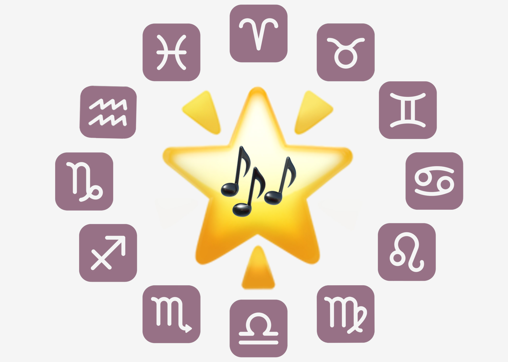

Music from the stars
Astrology-based playlists
Welcome! If you're anything like me, you probably spent quarantine making playlists and wondering how the planets were influencing your life. Or, maybe I'm just weird. Astrology has been my hobby during quarantine and I thought the perfect way to showcase that would be to create playlists based on your astrological placements.
You might be saying to yourself, "Gaby, I have no idea what any of this means!" Don't worry! I've compiled everything you need to know in a glossary of terms. But if you're a seasoned (and by that I mean beginner) astrologer like me, you can go right to finding out your musical selections based on your sun sing or your big three. Not into this whole astrology gambit? We also made a playlist for you.... because I'm really nice (must be the Taurus moon).